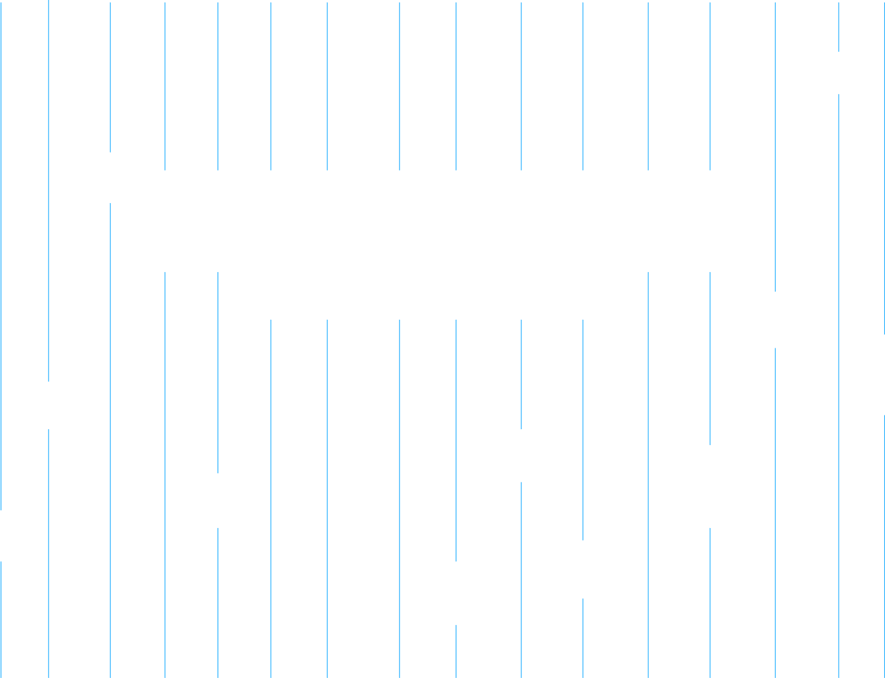
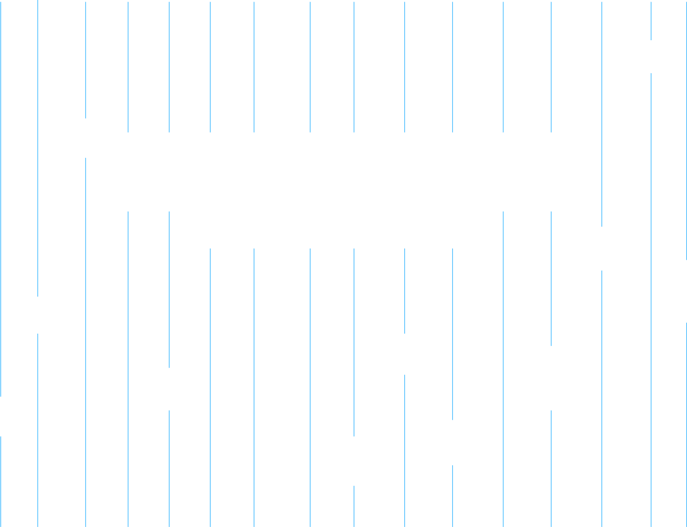

Victoria Vevest
Frontend Udvikler, studerende
I sommeren 2022 startede jeg på en bachelor i sociologi. Jeg fandt dog hurtigt ud af, at det eneste der fangede mig ved udannelsen var, når vi skulle bruge et programmeringssprog til at håndtere dataset. Min interesse for kodning blev vakt til livs og siden da vokset. I sommeren 2023 startede jeg på uddannelsen Multimediedesign og har nu på mit 3. semester valgt at specialisere mig i webudvikling - kodning. Jeg er vild med at kunne kombinere min kreative side med min logisk-tænkende og nørdede side.
Mit fokus er i øjeblikket at dygtiggøre mig inden for OOP JavaScript, og udvide mit repetoire af kodesprog. Jeg har et mål om at blive fullstack developer i fremtiden, men lige nu fokuserer jeg på skulle at ville lære mit første backend sprog.
Når jeg ikke sidder hypnotiseret bag computeren, spiller jeg musical teater, danser og bruger tid med min lille gravhund.